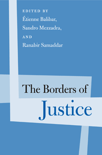

Exploring the limits of and contradictions of transitional justice
Exploring the limits of and contradictions of transitional justice


 Exploring the limits of and contradictions of transitional justice
Exploring the limits of and contradictions of transitional justice

|  |
The Borders of Justiceedited by Étienne Balibar, Sandro Mezzadra and Ranabir Samaddarpaper EAN: 978-1-43990-686-6 (ISBN: 1-43990-686-6) |
"The Borders of Justice interrogates the concept and practices of justice in original and provocative ways, combining the geographical diversity of the authors with a variety of disciplinary and methodological approaches. The essays reveal how justice appears differently in different places and from different perspectives. This is an important contribution to contemporary debates on justice."
—Michael Hardt, Professor of Literature at Duke University, and co-author (with Antonio Negri) of Empire, Multitude: War and Democracy in the Age of Empire, and Commonwealth
The Borders of Justice investigates the complexities of transitional justice that emerge from its “social embeddedness.” This original collection of essays, which stem from a collective research program on social justice undertaken by the Calcutta Research Group, confronts the concept and practices of justice. The editors and contributors question the relationship between geography, methodology, and justice—how and why justice is meted out differently in different places. Expanding on Michael Walzer's idea of the “spheres of justice,” the contributors argue that justice is burdened with our notions of social realities and expectations, in addition to the influence of money, law, and government.
Contributors include: Anirban Das, Jean-Louis Halpérin, Francisco Naishtat, Brett Neilson, Emmanuel Renault, Juha Rudanko, Subir Sinha, and the editors.
Excerpt available at www.temple.edu/tempress
Editors’ Introduction
1. Justice and Equality: A Political Dilemma? Pascal, Plato, Marx • Étienne Balibar
2. Global Justice and Politics: On the Transition from the Normative to the Political Level • Francisco Naishtat
3. Traversing the Borders of Liberalism: Can there be a Liberal Multiculturalism? • Juha Rudanko
4. The Long March from the Margins: Subaltern Politics, Justice and Nature in Postcolonial India • Subir Sinha
5. Struggles of Justice: Political Discourses, Experiences, and Claims • Emmanuel Rénault
6. Aestheticising Law into Justice: The Fetus in a Divided Planet • Anirban Das
7. The Justice-Seeking Subject • Ranabir Samaddar
8. Law’s Internationalisation and Justice for the Citizens and Noncitizens in France • Jean-Louis Halpérin
9. Borderscapes of Differential Inclusion: Subjectivity and Struggles on the Threshold of Justice’s Excess • Sandro Mezzadra and Brett Neilson
Contributors
Index
Étienne Balibar is Emeritus Professor of Humanities at the University of California, Irvine, and Professor at Kingston University, London. He is the author of numerous books including We the People of Europe? Reflections of Transnational Citizenship, and Politics and the Other Scene.
Sandro Mezzadra is Associate Professor of the Political Theory at the University of Bologna. He has published extensively on the subjects of citizenship, migration and postcolonialism. He is co-editor (with Andrea Fumagalli) of Crisis in the Global Economy: Financial Markets, Social Struggles, and New Political Scenarios.
Ranabir Samaddar, formerly a professor of South Asia Studies, is now the Director of Calcutta Research Group, and founder-editor of the journal Refugee Watch. He is the author of several books on the subjects of postcolonialism, India, and politics, including The Marginal Nation and The Emergence of the Political Subject.
Sociology
Political Science and Public Policy
Philosophy and Ethics
Politics, History, and Social Change, edited by John C. Torpey.
This series will disseminate serious works that analyze the social changes that have transformed our world during the twentieth century and beyond. The main topics to be addressed include international migration; human rights; the political uses of history; the past and future of the nation-state; decolonization and the legacy of imperialism; and global inequality. The series will also translate into English outstanding works by scholars writing in other languages.
© 2015 Temple University. All Rights Reserved. This page: http://www.temple.edu/tempress/titles/2152_reg.html.